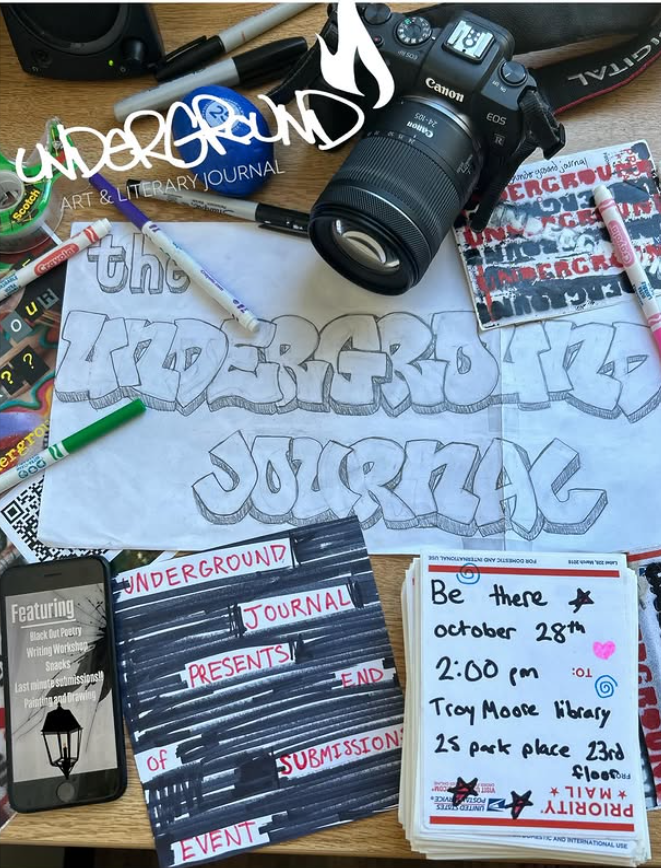

Growth · Editorial Marketing
As Head of Marketing and then Director of External Affairs for Georgia State's Underground Journal, I ran marketing across three launches over four semesters, building a marketing team from scratch and growing submissions 507%.

{{ block.label }}
{{ block.body }}
The Three Launches
The Execution